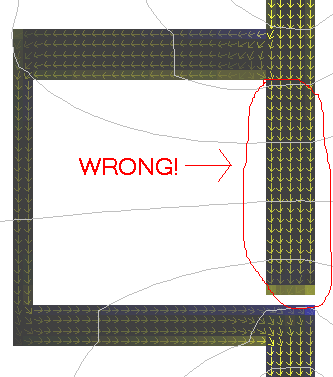
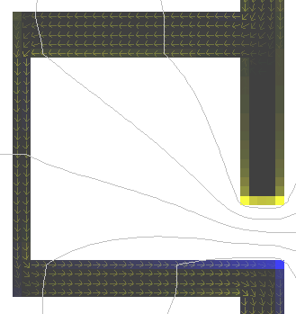

Click here to go to the applet.
This java applet demonstrates
electrostatics and static current distributions in two dimensions.
There is also a three dimensional applet
which is more accurate but less flexible.
When the applet starts up you will see the electric field of a
single positive charge. The yellow circle represents the charge;
the white circles around it are equipotential lines (lines of constant
potential). The green arrows indicate the electric field. The charge
can be dragged around the screen with the mouse.
In general, yellow represents positive charge, and blue represents
negative charge.
Conductors, dielectrics, and media with bound charges will show up as
gray. There
aren't enough colors or shades of gray to make the different
kinds of media look different. Use the Show Material Type
menu option to tell them apart.
The Setup popup can be used to view some interesting
pre-defined experiments. Once an experiment is selected,
you may modify it all you want. The choices are:
- Single Charge: this is a single positive charge.
- Double Charge: Two positive charges.
- Dipole Charge: One positive and one negative
charge. The equipotential between the two charges should be a straight
line; set the accuracy menu to a higher setting to make it straighter.
- Charge + Plane: A charge near a grounded
conductor. Note that the field in the upper half is nearly
the same as in Dipole Charge (it should be exactly the same). The
blue color on the conductor indicates negative surface charge, which is
put there to balance the external field and
maintain the conductor at ground.
- Dipole + Uniform: A dipole in a uniform field.
- Quadrupole Charge: Two positive and two negative
charges.
- Conducting Planes: Two conductors fixed
at opposite potentials. The yellow and blue color on the outer edge of
the conductors indicate positive and negative surface charges. Charge
is added to or removed from each conductor as needed to maintain the
potential.
- Charged Planes: Two uniformly charged planes.
- Conducting Cylinder: A cross section of a conducting
cylinder at positive potential.
- Grounded Cyl + Charge: A cross section of a grounded
conducting cylinder with a charge next to it.
- Grounded Cyl + Field: A cross section of a grounded
conducting cylinder in a uniform field.
- Charged Cylinder: A cross section of an uniformly
charged cylinder.
- Charged Hollow Cyl 1: A cross section of an uniformly
charged hollow cylinder. Note that there is no field in the cavity,
since the potential is constant there.
- Charged Hollow Cyl 2: A cross section of an uniformly
charged cylinder with an off-center cylindrical cavity inside. Note that there
is a uniform field in the cavity.
- Floating Cyl + Charge: A cross section of a cylinder
with floating potential, with a charge next to it. The charge on the
cylinder is a constant (zero), so the potential will vary depending on
where the charge is. If the charge is deleted then the cylinder will
be at ground.
- Floating Cyl + Plates: A cross section of a cylinder
with floating potential, with two plates at positive and negative
potentials. The charge on the cylinder is a constant as long as it is
not touching anything, so the potential will vary depending on where
it is located. If you move the cylinder so it is touching one of the
plates, then enough charge will move onto the cylinder to make its
potential the same as the plate it is touching.
- Conducting Box: A conducting box at positive potential.
The field is zero inside, since the potential is constant. Note that
the field is stronger at the corners.
- Sharp Point: A conductor at positive potential,
coming to a sharp point. Note that the field is strongest at the point.
- Corner: The corner of a conductor at positive potential.
- 45 Degrees: A 45 degree corner of a conductor at
positive potential. The field near this corner is stronger than
the field near a 90 degree corner.
- 135 Degrees: A 135 degree corner of a conductor at
positive potential. The field is weaker than near a 90 degree corner.
- Dielectric Cylinder: A dielectric cylinder with a charge
near it.
- Dielectric Cyl + Field: A dielectric cylinder in an external
uniform field.
- Dielectric 1: A charge near a dielectric boundary. Notice
that the field lines bend toward the boundary.
- Dielectric 2: A charge inside a dielectric, near the
boundary. Notice that the field lines bend away from the boundary.
- Dielectric + Dipole: A dipole with a dielectric boundary
between the charges.
- Dielectric Capacitor: Two conducting planes at opposite
potentials with a dielectric between them. The surface charge on the
planes is stronger at the dielectric boundary. You can see the total
charge on each plane by moving the mouse over one of them; the charge
is shown in the lower-left hand corner of the screen. The dielectric
strength can be adjusted using the Mouse = Adjust Dielectric
menu option, by dragging out an area including the dielectric with
the mouse and then fiddling with the Dielectric Constant
Slider. This will affect the amount of charge on each plane. The stronger
the dielectric, the more charge on each plane, and the higher the
capacitance between the two planes.
- Conducting Planes w/ Gap: Two conducting planes at opposite
potentials with a gap between them.
- Slotted Conducting Plane: Two grounded conducting planes with a gap
between them, in an external field. Some of the field leaks through the
gap.
- Shielding 1: A grounded conducting box shielding its interior from
an external uniform field.
- Shielding 2: A grounded conducting box shielding its exterior from
a charge inside.
- Box w/ One Live Side: A grounded conducting box with one side
that is at positive potential.
- Quadrupole Lens:
This is an electrostatic quadrupole lens, used to focus particle
beams. It is similar to the
magnetic
quadrupole lens used in particle accelerators.
It consists of four hyperbola-shaped conductors at
alternating potentials.
- Wire w/ Current: This is a wire carrying current from the
top of the screen to the bottom. The current
is indicated by the yellow arrows. Since the wire has resistance,
the potential drops continuously over the length of the wire.
- Resistor: This is two wires connected to a resistor, all carrying
current. The potential drops continuously over the length of the resistor,
and less so over the length of the wire (since its resistance is
lower). Since the electric field is stronger in the resistor than in
the wire, there is some charge at the top and bottom of the resistor
to maintain this discontinuity in the field. This charge causes the
resistor to have some stray capacitance.
- Resistors in Parallel: This shows three resistors in
parallel. The middle one has the highest resistance, so the current
is weakest there. The left one has the lowest resistance.
- Current in 2D 1: This shows the flow of current in a
two-dimensional plate.
- Current in 2D 2: This shows the flow of current in a
wire which is wider in the middle.
The Mouse popup controls what happens when the mouse is
clicked. The following settings are possible:
- Mouse = Move Object:
Clicking on an object (a conductor, draggable charge, area of bound charge,
or dielectric) will allow you to drag it somewhere else on the
screen. Objects that extend offscreen cannot be moved.
- Mouse = Delete Object:
Clicking on an object (a conductor, draggable charge, area of bound charge,
or dielectric) will delete it.
- Mouse = Add + Draggable Charge:
Clicking on a point will create a positive draggable charge there.
- Mouse = Add - Draggable Charge:
Clicking on a point will create a negative draggable charge there.
- Mouse = Clear Square:
Clicking on a square will remove whatever is there (conductor,
bound charge, dielectric). This will remove just one square, as opposed
to Delete Object which will delete all connected squares. This
won't remove draggable charges; use
Delete Object to remove those.
- Mouse = Add Conductor (Gnd):
Clicking on a
point will create a conductor fixed at ground.
- Mouse = Add + Conductor:
Clicking on a
point will create a conductor fixed at positive potential.
- Mouse = Add - Conductor:
Clicking on a
point will create a conductor fixed at negative potential.
- Mouse = Add + Charge Square:
Clicking on a
point will create a square of positive bound charge.
- Mouse = Add - Charge Square:
Clicking on a
point will create a square of negative bound charge.
- Mouse = Add Dielectric:
Clicking on a
point will create a square of dielectric medium.
- Mouse = Make Floater:
Clicking on a
conductor will cause it to have a floating potential. Most conductors
in this applet are at fixed potential, which means that charge is added
or removed as needed to maintain a constant potential.
A floating conductor has a constant charge, so the potential will vary
depending on
what charges are nearby. Only one conductor on the screen can be
floating. If you make any changes to a floating conductor then it will
be changed into an ordinary conductor; you will have to use
Make Floater to make it floating again.
- Mouse = Adjust Conductivity:
Clicking on a point and dragging out a rectangular area will allow you to
adjust the conductivity of the conductors in that area using the
Conductivity slider. The
Show Material Type menu option may come in handy here (and in
the following options) to see feedback from the changes you are making
and to compare the conductivity of all conductors on the screen.
- Mouse = Adjust Dielectric:
Clicking on a point and dragging out a rectangular area will allow you to
adjust the dielectric constant on the dielectrics in that area using the
Dielectric Constant slider.
- Mouse = Adjust Potential:
Clicking on a point and dragging out a rectangular area will allow you to
adjust the potential on the conductors in that area using the
Potential slider. This can also be used to change the potential
of a floating conductor.
- Mouse = Adjust Charge:
Clicking on a point and dragging out a rectangular area will allow you to
adjust the charge on the draggable or bound charges in that area
using the Charge slider.
The Show popup determines which fields or other quantities to
display, and how to display them.
- Show Electric Field (E): Show the electric field
as arrows. The arrows go from dark green to light green and
then to white as the field gets stronger.
- Show E Lines: Show the electric field as lines. The
color of the lines go from dark green to light green and
then to white as the field gets stronger. The density of the
lines is kept fairly constant, so in order to determine the
field strength you need to look at the color of the lines
rather than how far apart they are.
- Show Potential (Phi): Show the potential; green is
positive, red is negative, and black is ground.
- Show Vector Potential: Show the vector potential (A)
as arrows.
- Show Magnetic Field (B): Show the magnetic field
as green (positive, toward you) or red (negative, away from you).
- Show Current (j): Show the current density as
yellow arrows.
- Show Charge (rho): Show the charge density as
yellow (positive) or blue (negative).
- Show Displacement (D): Show the electric displacement vector.
- Show Polarization (P): Show the electric
polarization vector.
- Show Polarization Charge: Show the
polarization charge density.
- Show Material Type: Since all materials show up as
gray, you need this option to tell them apart:
- Conductors: cyan (
 ) (lighter shades indicate
better conductors)
) (lighter shades indicate
better conductors)
- Floating Potential Conductors: purple (
 )
)
- Dielectrics: orange (
 ) (lighter shades indicate
stronger dielectrics)
) (lighter shades indicate
stronger dielectrics)
- Bound Charges: blue (
 ) or yellow (
) or yellow ( )
)
- Show rho/j: Show both the charge density and the current.
- Show E/rho: Show both the electric field and the charge density.
- Show E lines/rho: Show both the electric field lines and the charge density.
- Show E/j: Show the current density in conductors and the
electric field outside of conductors.
- Show E lines/j: Show the current density in conductors and the
electric field lines outside of conductors.
- Show E/rho/j: Show the current density in conductors and the
electric field outside of conductors. Also, show the charge density.
- Show E lines/rho/j: Show the current density in conductors and the
electric field lines outside of conductors. Also, show the charge density.
- Show E/phi: Show the electric field and the potential.
- Show E lines/phi: Show the electric field lines and the potential.
- Show E/Phi in conductors: Show the electric field,
and in conductors also show the potential.
- Show E lines/Phi in conductors: Show the electric field lines,
and in conductors also show the potential.
- Show E/Phi/j: Show the current density in conductors
and the electric field outside of conductors. Also show the potential.
- Show E lines/Phi/j: Show the current density in conductors
and the electric field lines outside of conductors. Also show the potential.
- Show B/j: Show the magnetic field and the current density.
- Show E/B/rho/j: Show the electric and magnetic field outside
of conductors and the charge and current densities inside.
- Show E lines/B/rho/j: Show the electric field lines and magnetic
field outside
of conductors and the charge and current densities inside.
- Show Ex: Show the X component of the electric field.
- Show Ey: Show the Y component of the electric field.
- Show Dx: Show the X component of the electric displacement.
- Show Dy: Show the Y component of the electric displacement.
The Accuracy popup controls the accuracy used to calculate
the fields. Lower accuracy is faster but may display misleading or
incorrect results.
The Clear All button clears the screen.
The Stop Calculation checkbox stops the calculation of the
fields. You can check this temporarily
if you want to make a bunch of changes without having the
calculation slow you down. Then when you're done, uncheck it to have
the fields calculated.
The Enable Current checkbox allows current to flow. When this is
checked, the top of the screen is fixed at positive potential and the
bottom of the screen is fixed at negative potential. If there is a
conducting path from the top to the bottom of the screen, then current
will flow. Any conductors not connected to the top or bottom of the
screen will be at ground.
The Draw Equipotentials checkbox draws equipotential lines,
which are lines of constant potential.
The Resolution slider allows you to speed up or slow down the
applet by adjusting the resolution; a higher resolution is slower
but looks better.
The Brightness slider controls the brightness, just like on a
TV set. Also when the brightness is higher it causes more equipotentials
to be drawn.
The Equipotential Count slider allows you to control the number
of equipotentials independently from the brightness.
Warning! With low accuracy settings, the applet may give bad results
for current flow in circuits with dead ends, like this one:

This is obviously not correct; it's not possible to have steady-state
current flow into a dead end. The problem is that the branch has a very thin separation between it
and a conductor at higher potential, and that confuses the applet.
To fix this, either use a higher accuracy setting (which will be slower)
or make the separation wider, like so:

Click here to go to the applet.


java@falstad.com